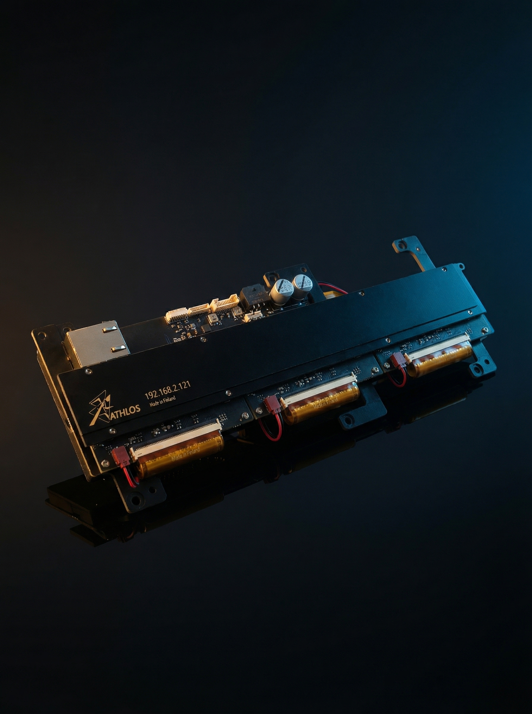
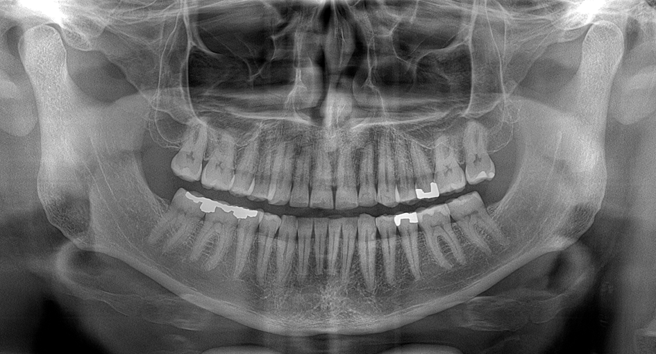
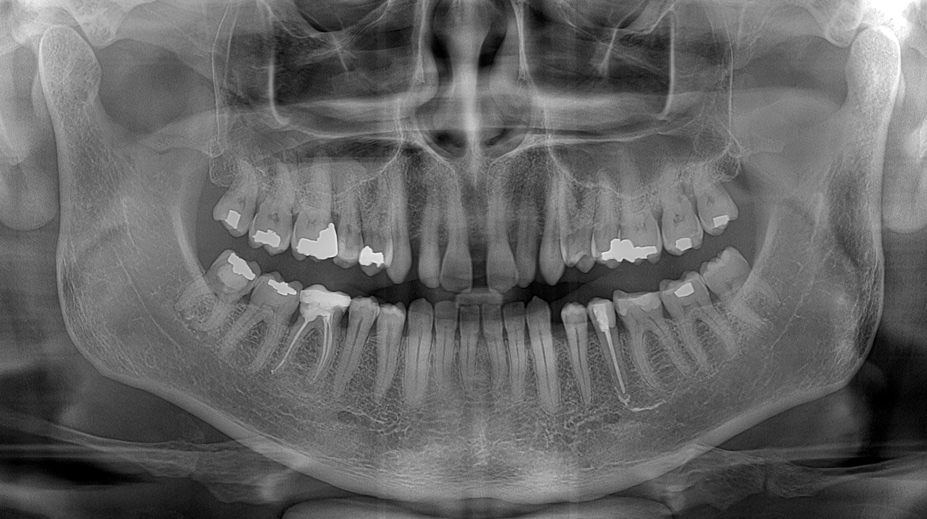
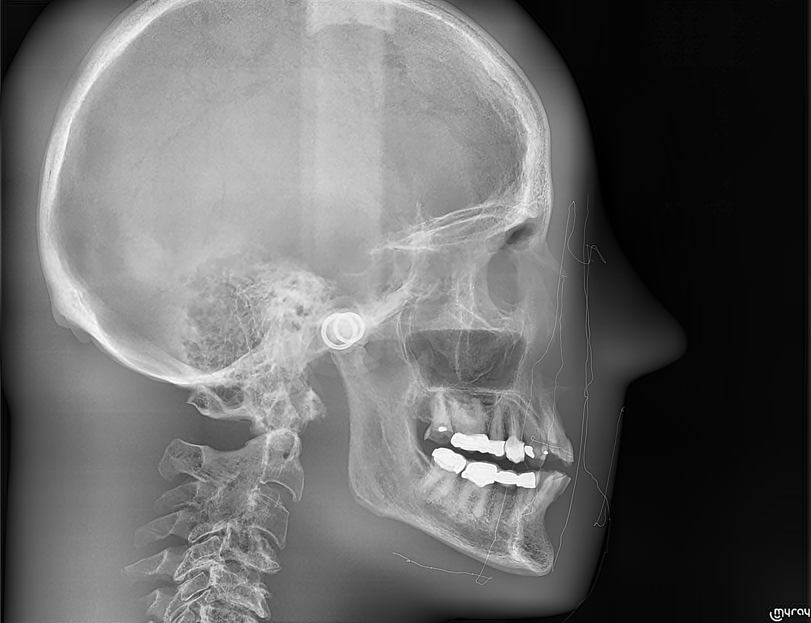
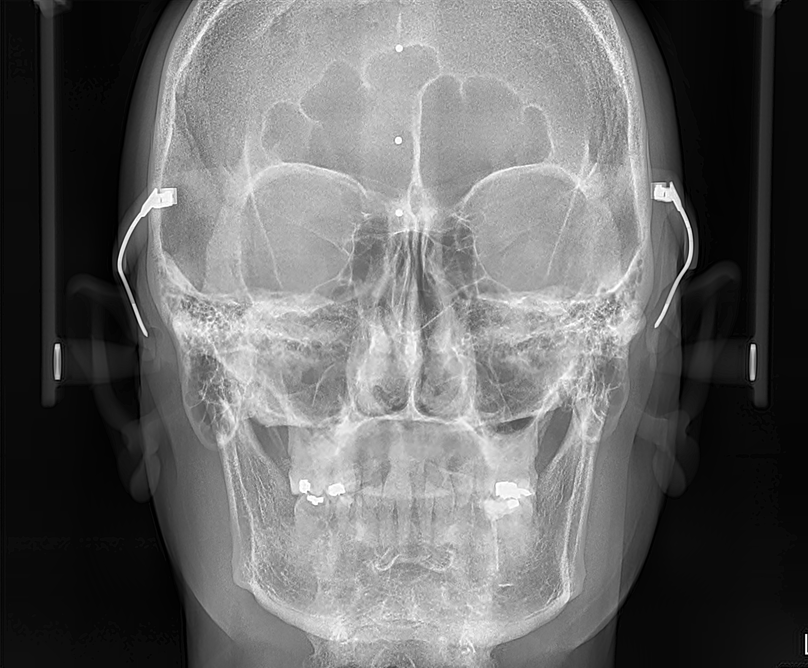

Ultra-Fast
Scanning Sensor
Ultra-fast direct conversion scanning sensor for high-speed, high-sensitivity X-ray imaging.

Overview
One sensor.
Multiple applications.
UFS is a multipurpose direct conversion linear scanning sensor designed for dental panoramic and cephalometric imaging, inline industrial inspection, and automated X-ray inspection systems. It is built on CdTe detector material bump-bonded to a full-custom ASIC — a configuration that delivers exceptional imaging performance across all supported applications.
The result is a sensor with very high sharpness and resolution, exquisite sensitivity and contrast resolution, single-photon-sensitive performance, and an extremely wide dynamic range. UFS connects via Gigabit Ethernet and supports both frame mode and TDI operation, making it suitable for a broad range of system architectures.
All UFS products include the Athlos SDK and API, and integration is supported through DLL.
Athlos SDK & API
All UFS products include the Athlos SDK & API. Integration is supported through DLL. A graphical evaluation interface and advanced post-processing filter library are included.

Key Features
Precision in every dimension.
Direct Conversion CdTe-CMOS
CdTe detector material bump-bonded to a proprietary full-custom ASIC. X-rays convert directly to signal — no scintillator, no intermediate energy loss.
Ultra-Fast Scanning
Designed for very high scanning speeds — 30 m/min at 100 µm, 240 m/min at 200 µm, and up to 1,920 m/min at 400 µm resolution.
Wide Dynamic Range
16-bit dynamic range ensures consistent imaging performance across very different attenuation conditions — critical for both dental and industrial applications.
Single-Photon Sensitivity
Single-photon-sensitive TDI performance enables high-quality imaging at reduced dose — a meaningful advantage in both dental and inspection workflows.
Gigabit Ethernet
Standard GigE interface. Plug-and-ready positioning, simple integration into system architectures. Frame mode and TDI mode both supported.
SDK & API Ready
Full Athlos SDK with C/C++ API, evaluation GUI, and post-processing filter library. Integration support for OEM and system integrator customers.
Product Family
Three models.
Selectable active widths.
The UFS family spans three model sizes — UFS150, UFS225, and UFS460 — with active widths selectable from 3.2 mm to 5.2 mm depending on application requirements.
The modular design of the UFS allows active lengths from 7.5 cm up to 10 m. Contact us for more information and customized offerings.

15 cm active length. Suited for dental panoramic imaging.
23 cm active length. Suited for dental cephalometric and industrial applications.
46 cm active length. Suited for medical and industrial applications.
The UFS is made of modules, with each module comprising three hybrids, each 25.6 mm long. One module offers 76.8 mm of active length. Whatever the active length requirement of your application, Athlos can deliver.
Scanning Speed
Speed and resolution
on the same sensor.
Image Quality
Imaging examples.




Get in Touch
Talk with Athlos about Ultra-Fast Scanning Sensor integration.
Whether you are integrating the Ultra-Fast Scanning Sensor into a new imaging system or evaluating it for an existing platform, the Athlos team can support you from specification through integration.